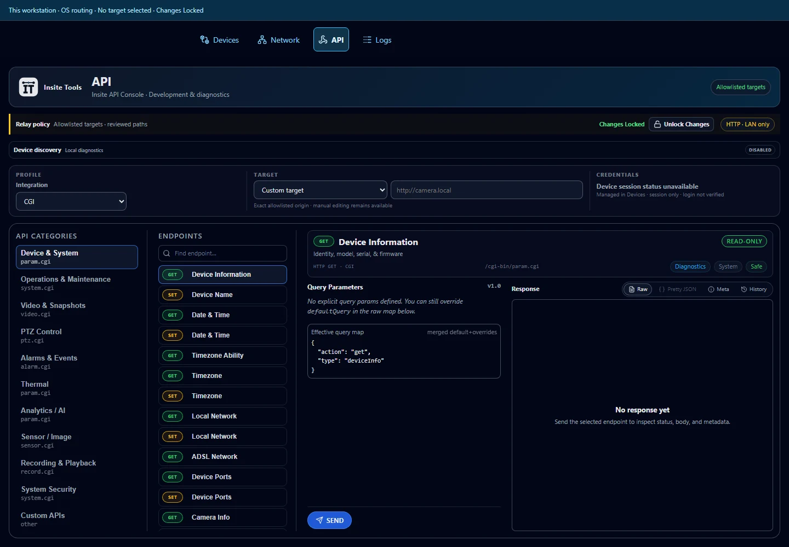

Insite Tools
Understand a device before changing it.
Insite Tools brings local device discovery, network diagnostics, API inspection and log review into an operator-controlled workspace. It keeps observed facts separate from configuration and gives evidence handling a deliberate workflow.
For technicians, integrators and field qualification.
- Discover and review device information
- Test network paths and API operations
- Inspect logs and prepare selected evidence


Browser E2E · API workbench View screenshotA focused workstation workbench
The workstation workbench puts device discovery, network checks, API requests and log review into focused tasks. Inspection stays separate from operator-authorized configuration changes.
A device qualification sequence
- Discover the targetUse Devices and Network to inspect observed device and service information.
- Inspect before changingReview supported Hikvision, Camera CGI or ONVIF API operations; device-changing actions remain behind Changes Locked.
- Select the evidenceReview Logs and prepare deliberately selected local exports, with saved-file acceptance tracked separately.
Tools can compare device-reported service configuration with separately observed results while preserving the source and uncertainty of each finding. Selected offline service-state comparison and router-role inspection support operator review; neither certifies a site nor establishes every network exposure path.
Example in practice: A technician can inspect an API endpoint while Changes Locked remains visible. The published browser capture shows the control boundary; it does not show a request sent to a device.
One workbench, with deliberate operator boundaries.
Devices, Network, API and Logs work together as a workstation workflow. Field-device acceptance and evidence export are tested independently, so what is demonstrated in a browser is not mistaken for a completed native deployment.
Explore qualification milestonesEstablished on workstation
The accepted UI covers Devices, Network, API and Logs, including selected-target controls, Changes Locked and session-only credentials.
Being field-qualified
The A50 APK and native interface have been visually accepted. Live native diagnostics, saved export bytes and cancellation, offline restart, WebView/security posture and policy-aware Windows host collection retain separate qualification gates.
Device-changing actions require the appropriate operator boundary. Workstation checks and the A50 native interface review have different scopes. Neither establishes successful real-device probing, full Android evidence export or site-wide security qualification.